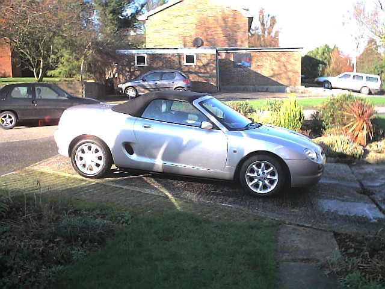
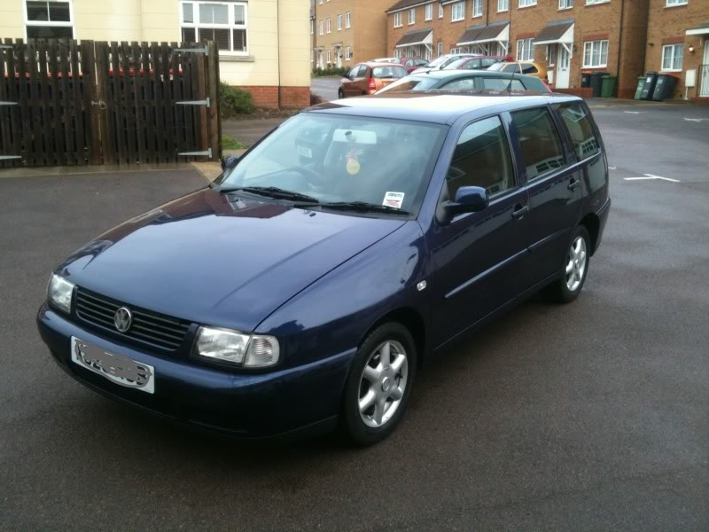

A Range of Vehicles
We don't change our cars very often, but over the years we have owned (or had the use of) quite a few. We don't have records of some of them and don't have photos of the earlier ones, but here is a list as best as we can remember.
| Model | Year | Registration | Owned | Notes | |
|---|---|---|---|---|---|
 | MG TC | 1948 | 764 YUD | 2015 - | |
 | Fiat Panda | 2013 | GU63 WHD | 2013 - | |
| Renault Modus | 2005 | HK05 WGO | 2006 - 2013 | ||
| Volkswagon Golf GL Estate | 2000 | V374 ENJ | 2001 - 2006 | ||
|  | MGF | 2000 | W471 RKJ | 2001 - 2013 | |
|  | Volkswagen Polo Estate | 1997 | 1998 - 2001 | This is not a photo of our car, but it was the same colour. | |
| Rover 416 Tourer | 1994 | L987 UKV | 1995 - 1998 | This is not a photo of our car, but it was the same colour. | |
 | Citroen BX | 1991 | J190 UAP | 1991 - 1996 | This is not a photo of our car, but it was the same colour. |
 | Fiat Panda | 1989 | G108 HAW | 1990 - 2001 | This is not a photo of our car, but it was the same colour (although we didn't have white wheels). |
| Vauxhall Carlton Estate | 1990 | G612 UAP | 1990 - 1991 | This car was owned by Realm Control Systems. | |
| No photo, but it looked much like the one above. | Vauxhall Carlton Estate | 1988 | F618 CVU | 1988 - 1990 | This car was owned by Ferranti Computer Systems. |
| Saab 99 | JKY 703W | 1983 - 1988 | I don't think we had this car for five years. This is not a photo of our car, but it was the same colour. | ||
| Morris 100 Traveller | 1969 | VEH 546G | 1981 - 1989 | 'Doris' came with a spare engine and gearbox! | |
| Triumph Spitfire 4 | 1963 | 7202 HJ | 1982 - 2001 | This had belonged to Uncle Sam and Auntie Bay. | |
| Ford Fiesta Sport | 1980 | MVW 502V | 1981 - 1983 | This is not a photo of our car, but it was the same colour. | |
| Austin Maxi | 1977 | PTB 789R | 1977 - 1981 | This is not a photo of our car, but it was the same colour. | |
| Austin Mini Countryman | 1975 | JNN 71N | 1975 - 1977 | This is not a photo of our car, but it was the same colour. | |
| Austin Mini Van | 1973 - 1975 | This is not a photo of our car; ours was a darker green. It had a false, flat wooden floor in the back and we installed windows in the rear. | |||
| Austin Mini | 3035 PL | 1971 - 1973 | This was Angela's car before we were married. It was pale blue. | ||
| Ford Escort | SRC 362F | 1971 - 1972 | This is not a photo of my car, but it was the same colour. I sold it when we got engaged. | ||
| Standard 8 | 1958 | 1970 - 1971 | This is not a photo of Angela's car, but it was the same colour. It was her first car. | ||
| Ford Prefect 107E | 1960 | 1907 MM | 1967 - 1970 | This is not a photo of my car, but it was the same two-tone colours. It was my first car. |